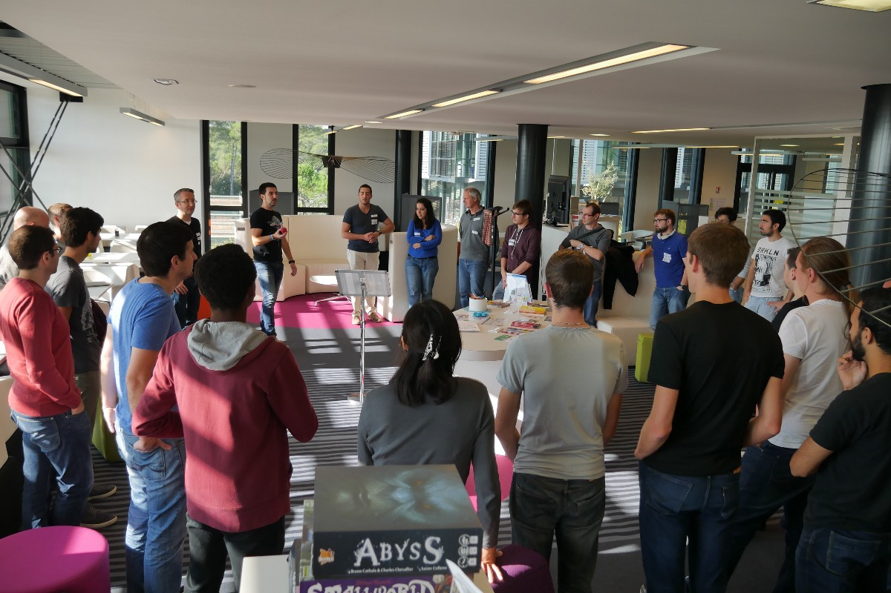
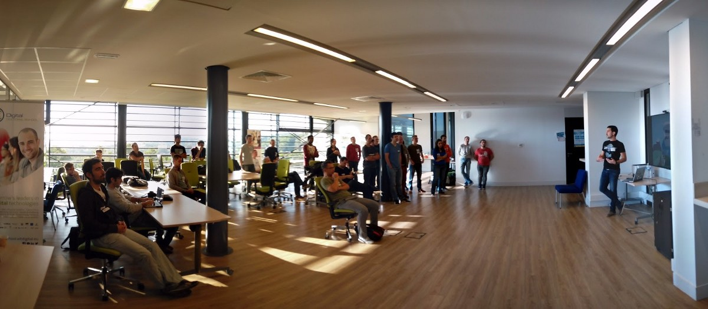
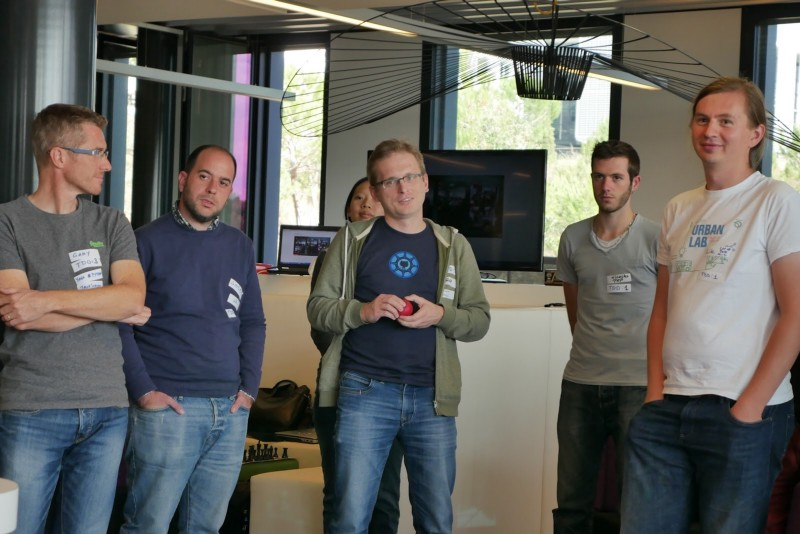
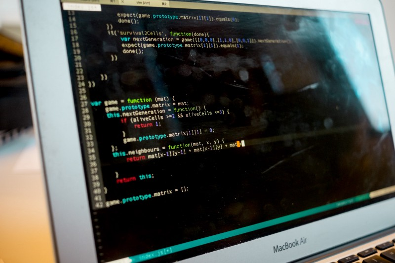

Global Day of Coderetreat 2016, Sophia Antipolis, France

We did it! The Global Day of Coderetreat in Sophia Antipolis has been a great success! My first coderetreat ever, and I played the role of the organizer and facilitator. It’s an event that I started to organize in August and I have been lucky to find the support of the University of Nice-Sophia Antipolis and my company, Amadeus IT Group. In the organization of all this I have been hugely helped by other people who have been facilitators with me (we were 3 facilitators, 1 host and 2 facilitators/helpers).

What we did
We started at 9am with the breakfast and at 9:30 I did the introduction of the day describing the day and showing the slide prepared by the global organizers (who have been really awesome giving us all the necessary material). There were 36 people (over 45 registered). Some of them were students of the university, other ones people from my company and other ones people working in the area.
The check-in
We used Eventbrite for the registration so their mobile app for the check-int. We asked the participants to put some stickers on their t-shirts with: name, favorite programming languages, their level of knowledge of TDD (0=”don’t know what it is, but I want to try” … 4=”I am a TDD Jedi”). The idea was to ease the making of the pairs, useful with so many people.

The sessions
At 10am we started with the sessions. After each of them we made a 10 minutes retrospective where we were all in a circle we tried to use the technique of the ball: only the person who has it can speak. Turned out that we were spending too much time finding the next person who wanted to talk, so we used this technique only for the first session and then we stopped. For all the other ones we stayed all in a circle and everybody had to speak for very few seconds. And now the sessions.
1.: no constraints. We left people to familiarize with the exercise without any particular constraint (but for being in pair). We saw that quite few people didn’t have a working testing framework and other ones either an IDE (mostly students). That’s how we decided what to assign for the second session.
2.: TDD, ping-pong pairing, use IDE and a build system. During the check-in we actually asked people to write their level of knowledge of TDD (from 0 to 4) and stick it on their t-shirts, and for this session we asked to everyone to pair with someone who was more familiar with this technique. This way people who were not familiar with testing and IDE got introduced to them and got something working pretty quickly. For some people this set-up took quite some time and few pairs started to focus on the exercise pretty late in the session. Other ones instead didn’t have any issue at all. But still, because of this problems we decide to stick with this constraint and continue with it.

- Lunch for 1h30.
3.: same constraints as session #2 + rules of simple design and 1 constraint of their choice on top of it. Actually we also had a list of constraints that people could choose from, in case they felt particularly brave :-). So, in this session we didn’t give any mandatory one, but we let those who had problems with the set-up to continue, while we said to the others to pick a new one of their choice. It turned out it was a good idea. At the end of this session basically everybody was up and running, way more confident and really happy about ping-pair programming and curious about TDD.
4.: no mouse and no more than 4 lines of code per function. People had lot of fun with this one, and for the only person who was using Vim we put another constraint: silent pairing (but to tell the other person the shortcuts). Quite difficult for them, but the retrospective was funny :)

5.: only one additional level of indentation per function. This was the most difficult session of the day, basically. The good thing is that everybody at this point was very comfortable with experimenting and nobody was basically afraid to try things. So, this session was interesting because we, as facilitators, received interesting questions regarding the meaning of this constraint, the differences between one language to another, and other interesting point of views.

What went well
Basically: everything! It’s been way better than expected. All the participants got very well the spirit of the day: learning by going out of their comfort zones. And they really did! In each retrospective almost everybody was willing to try a new programming language in the next session (Elm has been the most successful one :D), a lot of people discovered Test-Driven Development for the first time and they were very happy to continue using it. Other ones discovered pair programming and they loved to be with another person discussing about design and coding. Also the fact to delete the code at the end of each session was not a problem, instead it was the contrary: some of them were pretty happy about the feeling and they said to be willing to continue to do code katas on their own with this format.
In the closing circle everybody had something to be very happy about. We could really see the excitement in their eyes and we hope they will keep this spirit also after this event. Basically everybody asked us to do another coderetreat next month :) …. Why not? :)
What I learned
I learned that these kind of events should be done more frequently, because there are many people who really want them. I learned that, as facilitator, you have to be prepared to handle every kind of personality and each of them needs different kind of help. I learned that there’s no way to escape croissants for breakfast in France :) I learned that the most important thing is to make people comfortable. It’s only when they feel good and safe that they unleash their potential. I learned (actually, just a confirmation) that Software Craftsmanship is a mindset that influences every aspect of your life. And being inclusive, open, helpful and kind are on the top of the list. I got confirmed again that I absolutely have to learn functional programming :)
Video and photos
This is a short video of the event:
and this is the photo album: https://goo.gl/photos/T9VJT1GtLudEq63D9